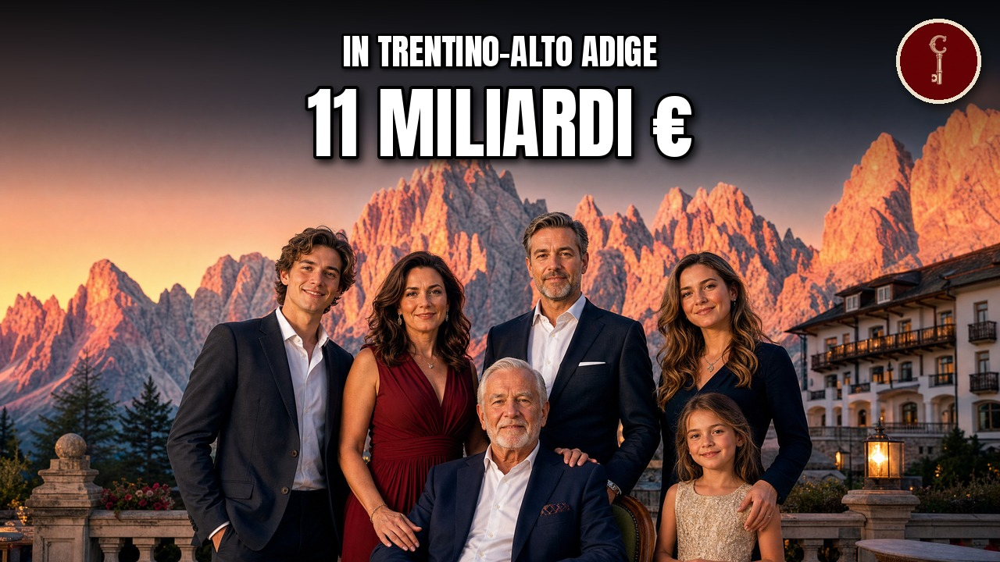

Trentino-Alto Adige
Le 19 famiglie trentine e altoatesine più RICCHE (le incontri ogni volta che vai in montagna)

Il video esce su YouTube a breve.
Il wafer della merenda, l'angioletto di ceramica che ti hanno regalato a Natale, il brindisi di Capodanno, il camion che sorpassi sul Brennero: sembrano cose che arrivano dalla montagna. Arrivano da una famiglia. In questo video mettiamo in fila 19 famiglie legate al Trentino e all'Alto Adige, che qui hanno la sede delle loro aziende oppure qui sono nate: dalla diciannovesima alla prima, per quanto fattura la loro azienda in un anno (l'ultimo dato pubblicato).
Le fonti, capitolo per capitolo
Solo le fonti che sostengono qualcosa detto nel video, capitolo per capitolo, nell'ordine in cui il video le usa.
Numero 19
forbes.it
Apri l'articoloidentitagolose.it
Apri l'articoloil Dolomiti
Apri l'articoloitaliaoggi.it
Apri l'articoloLinkiesta
Apri l'articoloNumero 18
Affaritaliani
Apri l'articoloAlto Adige
Apri l'articolofortuneita.com
Apri l'articoloil Dolomiti
Apri l'articoloilfattoquotidiano.it
Apri l'articolomoney.it
Apri l'articoloPanorama
Apri l'articoloteleborsa.it
Apri l'articoloThun
Apri l'articoloWikipedia
Apri l'articoloNumero 17
aziende.it
Apri l'articoloBeverfood
Apri l'articoloferraritrento.com
Apri l'articoloGambero Rosso
Apri l'articololadige.it
Apri l'articoloLinkiesta
Apri l'articoloNumero 16
beverfood.com
Apri l'articolobrauwelt.com
Apri l'articoloGambero Rosso International
Apri l'articoloMonocle
Apri l'articoloWikipedia
Apri l'articoloNumero 15
Alto Adige
Apri l'articoloaziende.it
Apri l'articoloCamera di commercio di Verona
Apri l'articoloControcampo (blog)
Apri l'articoloDissapore
Apri l'articoloEconomyUp
Apri l'articoloGambero Rosso International
Apri l'articoloWikipedia
Apri l'articoloZuegg
Apri l'articoloNumero 14
bergsteigen.com
Apri l'articoloLa Sportiva
Apri l'articololasportiva.com
Apri l'articolomontagna.tv
Apri l'articoloNumero 13
austria-forum.org
Apri l'articolofinstral.com
Apri l'articoloKunst Meran
Apri l'articoloNumero 12
AmeVe
Apri l'articoloDirigenti Industria
Apri l'articoloGiornale Trentino
Apri l'articolol'Adige
Apri l'articoloProvincia di Trento
Apri l'articoloWirtschaftsforum
Apri l'articoloNumero 11
ilsole24ore.com
Apri l'articoloimpulse
Apri l'articoloMCI Innsbruck
Apri l'articolooberalp.com
Apri l'articolosalewa.com
Apri l'articolosgbonline.com
Apri l'articoloNumero 10
Business Punk
Apri l'articolocalcioefinanza.it
Apri l'articoloForbes Italia
Apri l'articolohasslacher.com
Apri l'articolorubner.com
Apri l'articolouibk.ac.at
Apri l'articoloNumero 9
Dissapore
Apri l'articoloGambero Rosso
Apri l'articoloil Post
Apri l'articoloildolomiti.it
Apri l'articolol'Adige
Apri l'articoloLebensmittel Praxis
Apri l'articololoacker.com
Apri l'articololoacker.it
Apri l'articoloWikipedia
Apri l'articoloNumero 8
aquafil.com
Apri l'articoloCircular Conversations
Apri l'articolodesignboom
Apri l'articoloeconyl.aquafil.com
Apri l'articoloThe Business of Fashion
Apri l'articoloWikipedia
Apri l'articoloNumero 7
gruppopoli.it
Apri l'articolol'Adige
Apri l'articoloreportaziende.it
Apri l'articoloNumero 6
ara.cat
Apri l'articoloaustria-forum.org
Apri l'articolodrschaer.com
Apri l'articolofamcap.com
Apri l'articoloschaer.com
Apri l'articoloNumero 5
autoscout24.it
Apri l'articoloeurope.autonews.com
Apri l'articoloGruppo Barchetti (video del centenario)
Apri l'articololibero.it
Apri l'articolowirtschaftsforum.de
Apri l'articoloNumero 4
Alto Adige Innovazione
Apri l'articoloeurotransport
Apri l'articoloGruber Logistics
Apri l'articologruber-logistics.com
Apri l'articoloilnordest.it
Apri l'articoloNumero 3
austria-forum.org
Apri l'articolodachser.com
Apri l'articoloeurotransport
Apri l'articoloFercam
Apri l'articolofercam.com
Apri l'articoloIl Giornale della Logistica
Apri l'articoloNumero 2
Acciaierie Valbruna
Apri l'articoloAlto Adige
Apri l'articoloaziende.it
Apri l'articoloil Nord Est
Apri l'articoloInterempresas
Apri l'articoloMilano Finanza
Apri l'articoloSiderweb
Apri l'articoloNumero 1
Distribuzione Moderna
Apri l'articolofortuneita.com
Apri l'articoloItaliaOggi
Apri l'articoloMark Up
Apri l'articoloMilano Finanza
Apri l'articoloteleborsa.it
Apri l'articoloWikipedia
Apri l'articoloApertura
Distribuzione Moderna
Apri l'articolofortuneita.com
Apri l'articoloGruppo Barchetti (video del centenario)
Apri l'articoloLinkiesta
Apri l'articoloChiusura
lasportiva.com
Apri l'articoloCoda
Alto Adige
Apri l'articolofri-el.it
Apri l'articoloil Post
Apri l'articololeitwind.com
Apri l'articoloWikipedia
Apri l'articoloMateriali
Attribuzioni di immagini e video
Fercam DAF105 m Planensattel
yellowbird479 · CC BY 2.0

yellowbird479 · CC BY 2.0
Monte Cornon Val di Fiemme
Laura Gasperi/MUCGT · CC BY-SA 4.0

Laura Gasperi/MUCGT · CC BY-SA 4.0
Predazzo
The original uploader was IN3YSG at Italian Wikipedia. · CC BY-SA 3.0

The original uploader was IN3YSG at Italian Wikipedia. · CC BY-SA 3.0
Predazzo dal Monte Cauriol
Llorenzi · CC BY-SA 3.0

Llorenzi · CC BY-SA 3.0
Panorama di Rovereto
Davide Mauro · CC BY-SA 4.0

Davide Mauro · CC BY-SA 4.0
Bolzano - Chiesa di Santa Maria Assunta - Campanile - 2026-09-04 14-21-32 001
Terragio67 · CC BY-SA 4.0

Terragio67 · CC BY-SA 4.0
Ansitz Klebenstein (Südostansicht)
Vollmond11 · CC BY-SA 3.0
.JPG){kind=link}
Vollmond11 · CC BY-SA 3.0
Gräfin Lene Thun Stiftung in Bozen Südtirol
Vollmond11 · CC BY-SA 3.0

Vollmond11 · CC BY-SA 3.0
Klebenstein
Cepaea · CC BY-SA 3.0

Cepaea · CC BY-SA 3.0
Thuniversum, Bozen
Gerd Fahrenhorst · CC BY 3.0

Gerd Fahrenhorst · CC BY 3.0
Panorama Trento Italy
en:user:Giac · CC BY-SA 2.5

en:user:Giac · CC BY-SA 2.5
Municipality of Maranello in 2018.04
CAPTAIN RAJU · CC BY-SA 4.0

CAPTAIN RAJU · CC BY-SA 4.0
Trento-panorama piazza del Duomo 2
Matteo Ianeselli · CC BY 3.0

Matteo Ianeselli · CC BY 3.0
Bruno Lunelli enoteca
<a href="//commons.wikimedia.org/w/index.php?title=User:FrancescoTalani1993&action=edit&redlink=1" class="new" t · CC BY-SA 4.0

<a href="//commons.wikimedia.org/w/index.php?title=User:FrancescoTalani1993&action=edit&redlink=1" class="new" t · CC BY-SA 4.0
Quirinale palazzo e obelisco con dioscuri Roma
This Photo was taken by Wolfgang Moroder. Feel free to use my photos, but please mention me as the author and se · CC BY-SA 3.0

This Photo was taken by Wolfgang Moroder. Feel free to use my photos, but please mention me as the author and se · CC BY-SA 3.0
2019 Chinese Grand Prix podium (46896881704)
https://www.flickr.com/photos/77326563@N06/ · CC BY-SA 2.0
.jpg){kind=link}
https://www.flickr.com/photos/77326563@N06/ · CC BY-SA 2.0
Immagine Profilo di Matteo Lunelli
<a href="//commons.wikimedia.org/w/index.php?title=User:FrancescoTalani1993&action=edit&redlink=1" class="new" t · CC BY-SA 4.0

<a href="//commons.wikimedia.org/w/index.php?title=User:FrancescoTalani1993&action=edit&redlink=1" class="new" t · CC BY-SA 4.0
Algund (Südtirol) von oben
Thesurvived99 · CC BY-SA 3.0
_von_oben.JPG){kind=link}
Thesurvived99 · CC BY-SA 3.0
Spezialbierbrauerei Forst
https://www.flickr.com/people/24878103@N04 Internet Consulting · CC BY 2.0

https://www.flickr.com/people/24878103@N04 Internet Consulting · CC BY 2.0
Forst Radler
Benreis · CC BY 3.0

Benreis · CC BY 3.0
Le 5 birre del 150° Anniversario di Birra Menabrea
Barbaparo · CC BY-SA 4.0

Barbaparo · CC BY-SA 4.0
Brauerei Forst - panoramio (1)
qwesy qwesy · CC BY 3.0
.jpg){kind=link}
qwesy qwesy · CC BY 3.0
Forst Brauerei Algund
Benreis · CC BY 3.0

Benreis · CC BY 3.0
Forst Brauerei Algund Brücke
Benreis · CC BY 3.0

Benreis · CC BY 3.0
Bottiglie di Birra Menabrea 150° Anniversario
Mario Antonio Rossi · CC BY-SA 3.0

Mario Antonio Rossi · CC BY-SA 3.0
Biella Piano panorama
Alessandro Vecchi · CC BY-SA 3.0

Alessandro Vecchi · CC BY-SA 3.0
Forst Brauerei Algund Tresen
Benreis · CC BY 3.0

Benreis · CC BY 3.0
0 dalla Torre delle Polveri a Merano - Panorama 01
Lungoleno · CC BY-SA 4.0

Lungoleno · CC BY-SA 4.0
Kirche in Lana im Abendlicht
Daniel Reust · CC BY-SA 4.0

Daniel Reust · CC BY-SA 4.0
Produits Zuegg
Elneperpignan · CC BY-SA 4.0

Elneperpignan · CC BY-SA 4.0
Confitures Zuegg bio
Elneperpignan · CC BY-SA 4.0

Elneperpignan · CC BY-SA 4.0
Lana Südtirol Panorama 4
böhringer friedrich · CC BY-SA 2.5

böhringer friedrich · CC BY-SA 2.5
Lana Ehemalige Fabrik Zuegg
ManfredK · CC BY-SA 4.0

ManfredK · CC BY-SA 4.0
Lana Zuegg Fabrik 2017
ManfredK · CC BY-SA 4.0

ManfredK · CC BY-SA 4.0
Schenna (IT), Apfelplantage -- 2026 -- 4077
Dietmar Rabich · CC BY-SA 4.0
,_Apfelplantage_--_2026_--_4077.jpg){kind=link}
Dietmar Rabich · CC BY-SA 4.0
360 Tal bei Lana Südtirol 2024
Reustli · CC BY-SA 4.0

Reustli · CC BY-SA 4.0
Ziano
Tobia09 · CC BY-SA 3.0

Tobia09 · CC BY-SA 3.0
Tesero dal dosso di San Valerio
Syrio · CC BY-SA 4.0

Syrio · CC BY-SA 4.0
Ziano di Fiemme - Municipio
Syrio · CC BY-SA 4.0

Syrio · CC BY-SA 4.0
Climbing shoe la sportiva mythos 01
akeg · CC BY-SA 2.0

akeg · CC BY-SA 2.0
La Sportiva Tarantula - 04
Brett Jordan · CC BY 2.0

Brett Jordan · CC BY 2.0
Bardonecchia (102169896)
Bryan Allison from Las Vegas, NV, USA · CC BY-SA 2.0
.jpg){kind=link}
Bryan Allison from Las Vegas, NV, USA · CC BY-SA 2.0
La Sportiva Tarantula
Brett Jordan · CC BY 2.0

Brett Jordan · CC BY 2.0
FIN-Project Nova-line & Panorama Windows Vista
Finstral AG · CC BY-SA 4.0

Finstral AG · CC BY-SA 4.0
Hamburg, Hafen -- 2016 -- 3128
Dietmar Rabich · CC BY-SA 4.0

Dietmar Rabich · CC BY-SA 4.0
Finstral Unterinn 0535
Gerd Fahrenhorst · CC BY 4.0

Gerd Fahrenhorst · CC BY 4.0
Finstral Unterinn 0531
Gerd Fahrenhorst · CC BY 4.0

Gerd Fahrenhorst · CC BY 4.0
Finstral Studio
Finstral AG · CC BY-SA 4.0

Finstral AG · CC BY-SA 4.0
Michelangelo Pistoletto
Heinrich-Böll-Stiftung · CC BY-SA 2.0

Heinrich-Böll-Stiftung · CC BY-SA 2.0
Finstral Headquarters, Auna di Sotto
Finstral AG · CC BY-SA 4.0
Finstral AG · CC BY-SA 4.0
Lana Pano 99
Sascha Vogelgesang (Username: SaschaV) · CC BY 2.5

Sascha Vogelgesang (Username: SaschaV) · CC BY 2.5
Borgo Valsugana panorama
Pottercomuneo · CC BY-SA 4.0

Pottercomuneo · CC BY-SA 4.0
Salewa Bozen msu-4361-
Matthias Süßen · CC BY-SA 4.0

Matthias Süßen · CC BY-SA 4.0
Salewa Cube
OberalpHR · CC BY-SA 4.0

OberalpHR · CC BY-SA 4.0
Salewa Bozen msu-4345-
Matthias Süßen · CC BY-SA 4.0

Matthias Süßen · CC BY-SA 4.0
München Marienplatz 1903
Wolfgang Sauber · CC BY-SA 4.0

Wolfgang Sauber · CC BY-SA 4.0
Oberalp Headquarters in Bozen
OberalpHR · CC BY-SA 4.0

OberalpHR · CC BY-SA 4.0
Frea pass Sella group Dolomites
This Photo was taken by Wolfgang Moroder. Feel free to use my photos, but please mention me as the author and se · CC BY-SA 3.0

This Photo was taken by Wolfgang Moroder. Feel free to use my photos, but please mention me as the author and se · CC BY-SA 3.0
Kiens, de Rienz IMG 1138 2019-08-04 09.50
Michielverbeek · CC BY-SA 4.0

Michielverbeek · CC BY-SA 4.0
CrodaDelBecco B
Vermondo derivative work: MagentaGreen · CC BY-SA 3.0

Vermondo derivative work: MagentaGreen · CC BY-SA 3.0
Baakenhafen-Elbbrückenquartier 2022
Uwe Rohwedder · CC BY-SA 4.0

Uwe Rohwedder · CC BY-SA 4.0
Stade soccer TELUS-ULaval 2
Cephas · CC BY-SA 3.0

Cephas · CC BY-SA 3.0
Kiens, de Rienz IMG 1121 2019-08-03 20.37
Michielverbeek · CC BY-SA 4.0

Michielverbeek · CC BY-SA 4.0
Auna di Sotto
Syrio · CC BY-SA 4.0

Syrio · CC BY-SA 4.0
Loacker Napolitaner
Ramagliolo9 · CC BY-SA 4.0

Ramagliolo9 · CC BY-SA 4.0
LoackerProduct
Ashleyrhianne23 · CC BY-SA 4.0

Ashleyrhianne23 · CC BY-SA 4.0
Auna di Sotto - panoramio
Gregorini Demetrio · CC BY-SA 3.0

Gregorini Demetrio · CC BY-SA 3.0
Pacchetto di Loacker Classic Napolitaner - Vigevano
Capricornis crispus · CC BY-SA 4.0

Capricornis crispus · CC BY-SA 4.0
Auna di Sotto 01
Syrio · CC BY-SA 4.0

Syrio · CC BY-SA 4.0
Loacker Unterinn 0536
Gerd Fahrenhorst · CC BY 4.0

Gerd Fahrenhorst · CC BY 4.0
Arco (95924725)
Luca Casartelli · CC BY-SA 3.0
.jpeg){kind=link}
Luca Casartelli · CC BY-SA 3.0
Riva del Garda, Lago di Garda - 52132142516
dconvertini · CC BY-SA 2.0

dconvertini · CC BY-SA 2.0
Web Summit 2018 - Modum - Day 3, November 8 DF1 2640 (45731495282)
Web Summit · CC BY 2.0
.jpg){kind=link}
Web Summit · CC BY 2.0
Web Summit 2018 - Modum - Day 3, November 8 DF1 2672 (44868626675)
Web Summit · CC BY 2.0
.jpg){kind=link}
Web Summit · CC BY 2.0
Arco (Trentino) seen from Massone
Svíčková · CC BY 3.0
_seen_from_Massone.jpg){kind=link}
Svíčková · CC BY 3.0
Dolomite panorama
John Mason · CC BY 2.0

John Mason · CC BY 2.0
Trento-panorama rifugio Maranza
Matteo Ianeselli · CC BY 3.0

Matteo Ianeselli · CC BY 3.0
Trento-panorama Povo
Matteo Ianeselli · CC BY-SA 3.0

Matteo Ianeselli · CC BY-SA 3.0
Pergine Valsugana-Buss-panorama of Buss and Pergine Valsugana
Matteo Ianeselli · CC BY-SA 3.0

Matteo Ianeselli · CC BY-SA 3.0
Burgstall Lana Meran
böhringer friedrich · CC BY-SA 2.5

böhringer friedrich · CC BY-SA 2.5
Meran, Panorama (Blick vom Pulverturm)
Rolf Kranz · CC BY-SA 4.0
.jpg){kind=link}
Rolf Kranz · CC BY-SA 4.0
Gabinio.Bolzano-Funivia Al Colle. Bolzano, Panorama Della Citta' Dalla Funivia Al Colle 116B8
Mario Gabinio · CC BY 3.0 it

Mario Gabinio · CC BY 3.0 it
Vista da Sant'Ippolito - Postal
Syrio · CC BY-SA 4.0

Syrio · CC BY-SA 4.0
Gabinio.Bolzano. Bolzano, Panorama Dela Citta' Dal Colle 116B1
Mario Gabinio · CC BY 3.0 it

Mario Gabinio · CC BY 3.0 it
Opel Olympia 1938 típusú személygépkocsi. Fortepan 26581
FOTO:Fortepan — ID 26581: Adományozó/Donor: Angyalföldi Helytörténeti Gyűjtemény. archive copy at the Wayback Machine · CC BY-SA 3.0

FOTO:Fortepan — ID 26581: Adományozó/Donor: Angyalföldi Helytörténeti Gyűjtemény. archive copy at the Wayback Machine · CC BY-SA 3.0
Opel Olympia, Tiflis 4
Giftzwerg 88 · CC BY-SA 3.0

Giftzwerg 88 · CC BY-SA 3.0
Dolomites Val Gardena from Mont de Seura
This Photo was taken by Wolfgang Moroder. Feel free to use my photos, but please mention me as the author and se · CC BY-SA 3.0

This Photo was taken by Wolfgang Moroder. Feel free to use my photos, but please mention me as the author and se · CC BY-SA 3.0
Sant'Antonio (Padua) - Facade
Didier Descouens · CC BY-SA 4.0
_-_Facade.jpg){kind=link}
Didier Descouens · CC BY-SA 4.0
Denza D9 IAA 2023 1X7A0031
Alexander-93 · CC BY-SA 4.0

Alexander-93 · CC BY-SA 4.0
Luftwaffe Airbus A310-304; 10+21@CGN;20.05.2008 510bs (4311282576)
Aero Icarus from Zürich, Switzerland · CC BY-SA 2.0
.jpg){kind=link}
Aero Icarus from Zürich, Switzerland · CC BY-SA 2.0
Hannover Airport Luftwaffe Airbus A310-304 10+23 (DSC08308)
MarcelX42 · CC BY-SA 4.0
.jpg){kind=link}
MarcelX42 · CC BY-SA 4.0
10+25 Airbus A310 Luftwaffe (7443305360)
Aeroprints.com · CC BY-SA 3.0
.jpg){kind=link}
Aeroprints.com · CC BY-SA 3.0
Schwerguttransport
GRUBER Logistics · CC BY-SA 3.0 de

GRUBER Logistics · CC BY-SA 3.0 de
GRUBER Logistics Nachläufer
GRUBER Logistics · CC BY-SA 3.0 de

GRUBER Logistics · CC BY-SA 3.0 de
Gruber Logistics Hauptsitz Tag
GRUBER Logistics · CC BY-SA 3.0 de

GRUBER Logistics · CC BY-SA 3.0 de
Brenner basistunnel construction 2019 2
Smiley.toerist · CC BY-SA 4.0

Smiley.toerist · CC BY-SA 4.0
NZR D class locomotive No. 16 being transported by road to the Ferrymead Railway - October 2023 - 02
nzsteam · CC BY 2.0

nzsteam · CC BY 2.0
Schwimmkran HHLA III (3)
Dkvtig · CC BY-SA 4.0
.jpg){kind=link}
Dkvtig · CC BY-SA 4.0
Hamburg, Hafen -- 2016 -- 3176
Dietmar Rabich · CC BY-SA 4.0

Dietmar Rabich · CC BY-SA 4.0
GRUBER Logistics Megatrailer Varioplane offen
GRUBER Logistics · CC BY-SA 3.0

GRUBER Logistics · CC BY-SA 3.0
L00 008 Auer, Montan
Falk2 · CC BY-SA 4.0

Falk2 · CC BY-SA 4.0
Bolzano Fercam
Gerd Fahrenhorst · CC BY 3.0

Gerd Fahrenhorst · CC BY 3.0
Doppeltaschenwagen T3000e der TX Logistik AG bei Wettelsheim
W. Schimmeyer · CC BY-SA 4.0

W. Schimmeyer · CC BY-SA 4.0
Fiè allo Sciliar - panoramio
Alessandro Gigliotti · CC BY 3.0

Alessandro Gigliotti · CC BY 3.0
Fiè allo Sciliar da Siffiano 01
Syrio · CC BY-SA 4.0

Syrio · CC BY-SA 4.0
IMG7798 Acciaierie Valbruna Bolzano, Via Evangelista Torricelli, 2017-08
Aciarium · CC BY 4.0

Aciarium · CC BY 4.0
Acciaierie Falck, Arcore
Morgoth92, alias Giacomo Contratto · CC BY-SA 3.0

Morgoth92, alias Giacomo Contratto · CC BY-SA 3.0
Shaving Collectibles - Vintage Ever-Ready Travel Safety Razor & Case, Two Blade Holders, American Safety Razor Co., Inc. (14910887680)
Joe Haupt from USA · CC BY-SA 2.0
.jpg){kind=link}
Joe Haupt from USA · CC BY-SA 2.0
Acciaierie ex Falck
Titus Grey · CC BY-SA 4.0

Titus Grey · CC BY-SA 4.0
Palazzo Chiericati (Vicenza)
Didier Descouens · CC BY-SA 4.0
.jpg){kind=link}
Didier Descouens · CC BY-SA 4.0
Cathedral (Vicenza) - Sud esposizione
Didier Descouens · CC BY-SA 4.0
_-_Sud_esposizione.jpg){kind=link}
Didier Descouens · CC BY-SA 4.0
Linate Airport, Milan, Italy
Ptrump16 · CC BY-SA 4.0

Ptrump16 · CC BY-SA 4.0
Piazza Municipio Mugnano 1936
Fabrismugnano · CC BY-SA 4.0

Fabrismugnano · CC BY-SA 4.0
NATO base - Gricignano di Aversa
Matthew Townsend · CC BY 2.0

Matthew Townsend · CC BY 2.0
Ferrari 250 GT 2+2 Classic-Gala 2025 DSC 0846
Alexander Migl · CC BY-SA 4.0

Alexander Migl · CC BY-SA 4.0
Sterzing-Vipiteno
Fantasy · CC BY-SA 3.0

Fantasy · CC BY-SA 3.0
0 TDn 28 Switzerland Zermatt Matterhorn glacier ride 2018 Snow LEITNER NO-KEYWORD 241
Schneeengel1888 · CC BY-SA 4.0

Schneeengel1888 · CC BY-SA 4.0
Telecabina expo 2008
Sergio · CC BY 2.0

Sergio · CC BY 2.0
Leitner Ropeways (4084031236)
breki74 from Maribor, Slovenia · CC BY-SA 2.0
.jpg){kind=link}
breki74 from Maribor, Slovenia · CC BY-SA 2.0
Brixen Gebäude Durst AG (2 05-2015)
Oliver Abels · CC BY-SA 4.0
.jpg){kind=link}
Oliver Abels · CC BY-SA 4.0
Athesia buch silbergasse bozen 2019
Bartleby08 · CC BY-SA 4.0

Bartleby08 · CC BY-SA 4.0
Loacker Sillian
Emes · CC BY-SA 3.0

Emes · CC BY-SA 3.0
Eisacktal aus Prösels Brennerautobahn A22
This Photo was taken by Wolfgang Moroder. Feel free to use my photos, but please mention me as the author and se · CC BY-SA 3.0

This Photo was taken by Wolfgang Moroder. Feel free to use my photos, but please mention me as the author and se · CC BY-SA 3.0
La Sportiva Tarantula - 02
Brett Jordan · CC BY 2.0

Brett Jordan · CC BY 2.0
Frea pass Sella group Pisciadu Dolomites South Tyrol
This Photo was taken by Wolfgang Moroder. Feel free to use my photos, but please mention me as the author and se · CC BY-SA 3.0

This Photo was taken by Wolfgang Moroder. Feel free to use my photos, but please mention me as the author and se · CC BY-SA 3.0
Scene ricostruite
Alcune scene sono ricostruite con l'intelligenza artificiale. Non sono documenti né fotografie d'epoca.
Mappe
- Confini amministrativi italiani (openpolis/geojson-italy, dati ISTAT) · CC BY 4.0 · fonte